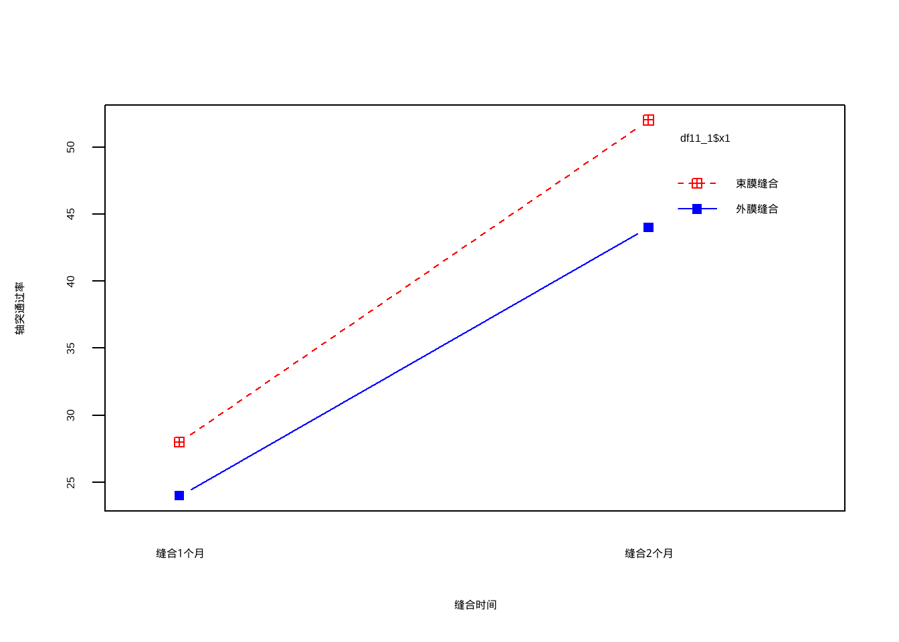
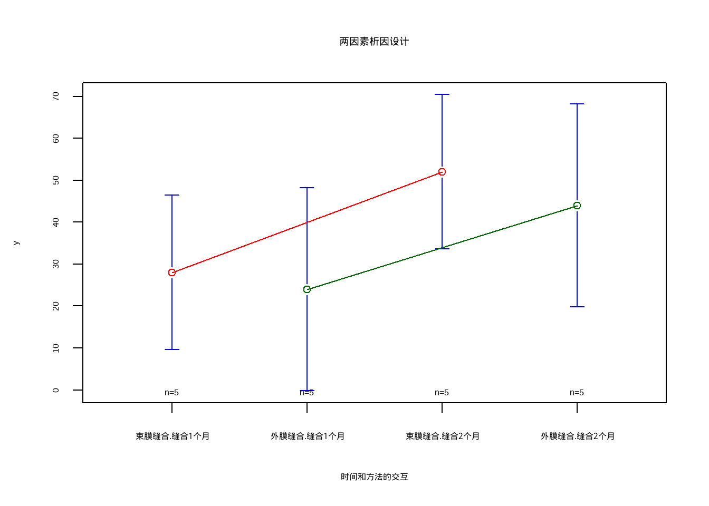
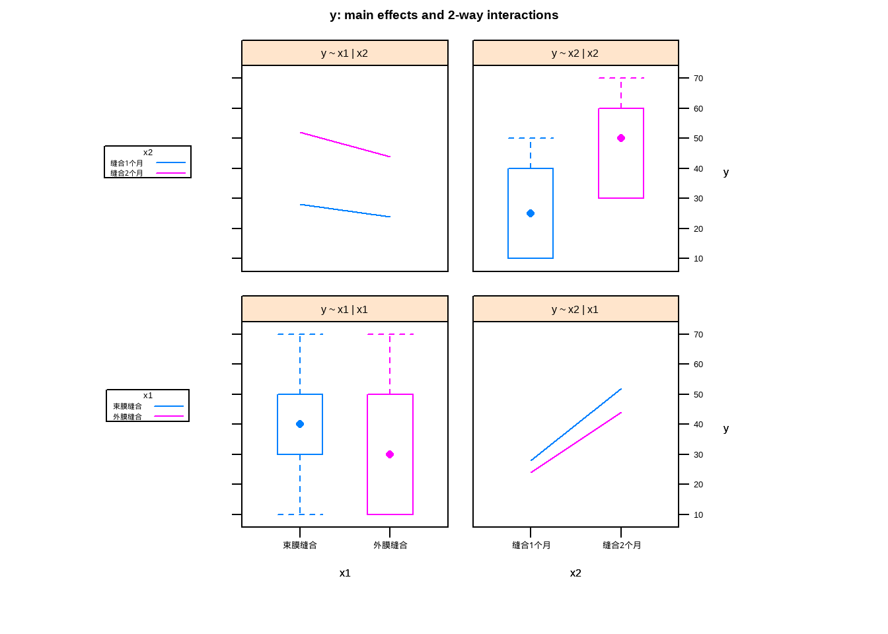

3 多因素方差分析
3.1 2 x 2 两因素析因设计资料的方差分析
使用课本例11-1的数据，自己手动摘录：
df11_1 <- data.frame(
x1 = rep(c("外膜缝合","束膜缝合"), each = 10),
x2 = rep(c("缝合1个月","缝合2个月"), each = 5),
y = c(10,10,40,50,10,30,30,70,60,30,10,20,30,50,30,50,50,70,60,30)
)
str(df11_1)
## 'data.frame': 20 obs. of 3 variables:
## $ x1: chr "外膜缝合" "外膜缝合" "外膜缝合" "外膜缝合" ...
## $ x2: chr "缝合1个月" "缝合1个月" "缝合1个月" "缝合1个月" ...
## $ y : num 10 10 40 50 10 30 30 70 60 30 ...数据一共3列，第1列是缝合方法，第2列是时间，第3列是轴突通过率。
进行析因设计资料的方差分析：
f1 <- aov(y ~ x1 * x2, data = df11_1)
summary(f1)
## Df Sum Sq Mean Sq F value Pr(>F)
## x1 1 180 180 0.600 0.4499
## x2 1 2420 2420 8.067 0.0118 *
## x1:x2 1 20 20 0.067 0.7995
## Residuals 16 4800 300
## ---
## Signif. codes: 0 '***' 0.001 '**' 0.01 '*' 0.05 '.' 0.1 ' ' 1结果显示了A因素主效应、B因素主效应、AB交互作用的自由度、离均差平方和、均方误差、F值、P值等，可以看到结果和课本是一致的！
简单介绍一下可视化两因素析因设计的方法：
interaction.plot(df11_1$x2, df11_1$x1, df11_1$y, type = "b",
col = c("red","blue"), pch = c(12,15),
xlab = "缝合时间", ylab = "轴突通过率")
另外一种可视化方法：
library(gplots)
##
## Attaching package: 'gplots'
## The following object is masked from 'package:stats':
##
## lowess
attach(df11_1)
plotmeans(y ~ interaction(x1,x2),
connect = list(c(1,3), c(2,4)),
col = c("red","darkgreen"),
main = "两因素析因设计",
xlab = "时间和方法的交互")
再介绍一种方法：
library(HH)
## Loading required package: lattice
## Loading required package: grid
## Loading required package: latticeExtra
## Loading required package: multcomp
## Loading required package: mvtnorm
## Loading required package: survival
## Loading required package: TH.data
## Loading required package: MASS
##
## Attaching package: 'TH.data'
## The following object is masked from 'package:MASS':
##
## geyser
## Loading required package: gridExtra
##
## Attaching package: 'HH'
## The following object is masked from 'package:gplots':
##
## residplot
interaction2wt(y ~ x1 * x2)
detach(df11_1)3.2 I x J 两因素析因设计资料的方差分析
使用课本例11-2的数据，自己手动摘录：
df11_2 <- data.frame(
druga = rep(c("1mg","2.5mg","5mg"), each = 3),
drugb = rep(c("5微克","15微克","30微克"),each = 9),
y = c(105,80,65,75,115,80,85,120,125,115,105,80,125,130,90,65,
120,100,75,95,85,135,120,150,180,190,160)
)
str(df11_2)
## 'data.frame': 27 obs. of 3 variables:
## $ druga: chr "1mg" "1mg" "1mg" "2.5mg" ...
## $ drugb: chr "5微克" "5微克" "5微克" "5微克" ...
## $ y : num 105 80 65 75 115 80 85 120 125 115 ...数据一共3列，第1列是a药物的剂量（3种剂量，代表3个水平），第2列是b药物的剂量（3种剂量），第3列是镇痛时间。
进行两因素三水平的析因设计资料方差分析：
f2 <- aov(y ~ druga * drugb, data = df11_2)
summary(f2)
## Df Sum Sq Mean Sq F value Pr(>F)
## druga 2 6572 3286 8.470 0.00256 **
## drugb 2 7022 3511 9.050 0.00190 **
## druga:drugb 4 7872 1968 5.073 0.00647 **
## Residuals 18 6983 388
## ---
## Signif. codes: 0 '***' 0.001 '**' 0.01 '*' 0.05 '.' 0.1 ' ' 1结果和课本也是一模一样的哦！
3.3 I x J x K 三因素析因设计资料的方差分析
使用课本例11-3的数据，
df11_3 <- foreign::read.spss("datasets/例11-03-5种军装热感觉5-2-2.sav",
to.data.frame = T,reencode="UTF-8")
## re-encoding from UTF-8
df11_3$a <- factor(df11_3$a)
str(df11_3)
## 'data.frame': 100 obs. of 4 variables:
## $ b: Factor w/ 2 levels "干燥","潮湿": 1 1 1 1 1 1 1 1 1 1 ...
## $ c: Factor w/ 2 levels "静坐","活动": 1 1 1 1 1 1 1 1 1 1 ...
## $ a: Factor w/ 5 levels "1","2","3","4",..: 1 1 1 1 1 2 2 2 2 2 ...
## $ x: num 0.25 -0.25 1.25 -0.75 0.4 ...
## - attr(*, "variable.labels")= Named chr [1:4] "活动环境" "活动状态" "军装类型" "主观热感觉"
## ..- attr(*, "names")= chr [1:4] "b" "c" "a" "x"
## - attr(*, "codepage")= int 65001进行3因素吸引设计资料的方差分析：
f3 <- aov(x ~ b * c * a, data = df11_3)
summary(f3)
## Df Sum Sq Mean Sq F value Pr(>F)
## b 1 9.94 9.94 23.138 6.98e-06 ***
## c 1 283.35 283.35 659.485 < 2e-16 ***
## a 4 5.20 1.30 3.024 0.0224 *
## b:c 1 12.68 12.68 29.514 5.82e-07 ***
## b:a 4 1.94 0.48 1.128 0.3491
## c:a 4 1.48 0.37 0.862 0.4905
## b:c:a 4 1.61 0.40 0.937 0.4472
## Residuals 80 34.37 0.43
## ---
## Signif. codes: 0 '***' 0.001 '**' 0.01 '*' 0.05 '.' 0.1 ' ' 1结果也是和课本一模一样。
3.4 正交设计资料的方差分析
使用课本例11-4的数据
df11_4 <- data.frame(
a = rep(c("5度","25度"),each = 4),
b = rep(c(0.5, 5.0), each = 2),
c = c(10, 30),
d = c(6.0, 8.0,8.0,6.0,8.0,6.0,6.0,8.0),
x = c(86,95,91,94,91,96,83,88)
)
df11_4$a <- factor(df11_4$a)
df11_4$b <- factor(df11_4$b)
df11_4$c <- factor(df11_4$c)
df11_4$d <- factor(df11_4$d)
str(df11_4)
## 'data.frame': 8 obs. of 5 variables:
## $ a: Factor w/ 2 levels "25度","5度": 2 2 2 2 1 1 1 1
## $ b: Factor w/ 2 levels "0.5","5": 1 1 2 2 1 1 2 2
## $ c: Factor w/ 2 levels "10","30": 1 2 1 2 1 2 1 2
## $ d: Factor w/ 2 levels "6","8": 1 2 2 1 2 1 1 2
## $ x: num 86 95 91 94 91 96 83 88进行正交设计资料的方差分析：
f4 <- aov(x ~ a + b + c + d + a*b, data = df11_4)
summary(f4)
## Df Sum Sq Mean Sq F value Pr(>F)
## a 1 8.0 8.0 3.2 0.2155
## b 1 18.0 18.0 7.2 0.1153
## c 1 60.5 60.5 24.2 0.0389 *
## d 1 4.5 4.5 1.8 0.3118
## a:b 1 50.0 50.0 20.0 0.0465 *
## Residuals 2 5.0 2.5
## ---
## Signif. codes: 0 '***' 0.001 '**' 0.01 '*' 0.05 '.' 0.1 ' ' 1结果和课本一模一样，用R语言进行方差分析真是太简单了！！！！
3.5 嵌套设计资料的方差分析
使用课本例11-6的数据。
df <- data.frame(factor1 = factor(rep(c("A","B","C"),each=6)),
factor2 = factor(rep(c(70,80,90,55,65,75,90,95,100),each=2)),
y = c(82,84,91,88,85,83,65,61,62,59,56,60,71,67,75,78,85,89)
)
str(df)
## 'data.frame': 18 obs. of 3 variables:
## $ factor1: Factor w/ 3 levels "A","B","C": 1 1 1 1 1 1 2 2 2 2 ...
## $ factor2: Factor w/ 8 levels "55","65","70",..: 3 3 5 5 6 6 1 1 2 2 ...
## $ y : num 82 84 91 88 85 83 65 61 62 59 ...
df
## factor1 factor2 y
## 1 A 70 82
## 2 A 70 84
## 3 A 80 91
## 4 A 80 88
## 5 A 90 85
## 6 A 90 83
## 7 B 55 65
## 8 B 55 61
## 9 B 65 62
## 10 B 65 59
## 11 B 75 56
## 12 B 75 60
## 13 C 90 71
## 14 C 90 67
## 15 C 95 75
## 16 C 95 78
## 17 C 100 85
## 18 C 100 89factor1是一级实验因素（不同的催化剂）， factor2是二级实验因素（不同的温度），y是因变量。
进行嵌套实验设计的方差分析：
f <- aov(y ~ factor1/factor2, data = df)
summary(f)
## Df Sum Sq Mean Sq F value Pr(>F)
## factor1 2 1956.0 978.0 177.82 5.83e-08 ***
## factor1:factor2 6 401.0 66.8 12.15 0.000716 ***
## Residuals 9 49.5 5.5
## ---
## Signif. codes: 0 '***' 0.001 '**' 0.01 '*' 0.05 '.' 0.1 ' ' 1结果和课本相同。
3.6 裂区设计资料的方差分析
使用课本例11-7的数据。这是一个完全随机的2*2裂区设计。
df <- data.frame(factorA = factor(rep(c("a1","a2"),each=10)),
factorB = factor(rep(c("b1","b2"),10)),
id = factor(rep(c(1:10),each=2)),
y = c(15.75,19.00,15.50,20.75,15.50,18.50,17.00,20.50,16.50,20.00,
18.25,22.25,18.50,21.50,19.75,23.50,21.50,24.75,20.75,23.75)
)
str(df)
## 'data.frame': 20 obs. of 4 variables:
## $ factorA: Factor w/ 2 levels "a1","a2": 1 1 1 1 1 1 1 1 1 1 ...
## $ factorB: Factor w/ 2 levels "b1","b2": 1 2 1 2 1 2 1 2 1 2 ...
## $ id : Factor w/ 10 levels "1","2","3","4",..: 1 1 2 2 3 3 4 4 5 5 ...
## $ y : num 15.8 19 15.5 20.8 15.5 ...
df
## factorA factorB id y
## 1 a1 b1 1 15.75
## 2 a1 b2 1 19.00
## 3 a1 b1 2 15.50
## 4 a1 b2 2 20.75
## 5 a1 b1 3 15.50
## 6 a1 b2 3 18.50
## 7 a1 b1 4 17.00
## 8 a1 b2 4 20.50
## 9 a1 b1 5 16.50
## 10 a1 b2 5 20.00
## 11 a2 b1 6 18.25
## 12 a2 b2 6 22.25
## 13 a2 b1 7 18.50
## 14 a2 b2 7 21.50
## 15 a2 b1 8 19.75
## 16 a2 b2 8 23.50
## 17 a2 b1 9 21.50
## 18 a2 b2 9 24.75
## 19 a2 b1 10 20.75
## 20 a2 b2 10 23.75进行裂区设计的方差分析：
f <- aov(y ~ factorA * factorB + Error(id/factorB), data = df)
summary(f)
##
## Error: id
## Df Sum Sq Mean Sq F value Pr(>F)
## factorA 1 63.01 63.01 28.01 0.000735 ***
## Residuals 8 18.00 2.25
## ---
## Signif. codes: 0 '***' 0.001 '**' 0.01 '*' 0.05 '.' 0.1 ' ' 1
##
## Error: id:factorB
## Df Sum Sq Mean Sq F value Pr(>F)
## factorB 1 63.01 63.01 252.05 2.48e-07 ***
## factorA:factorB 1 0.11 0.11 0.45 0.521
## Residuals 8 2.00 0.25
## ---
## Signif. codes: 0 '***' 0.001 '**' 0.01 '*' 0.05 '.' 0.1 ' ' 1结果同课本相同。